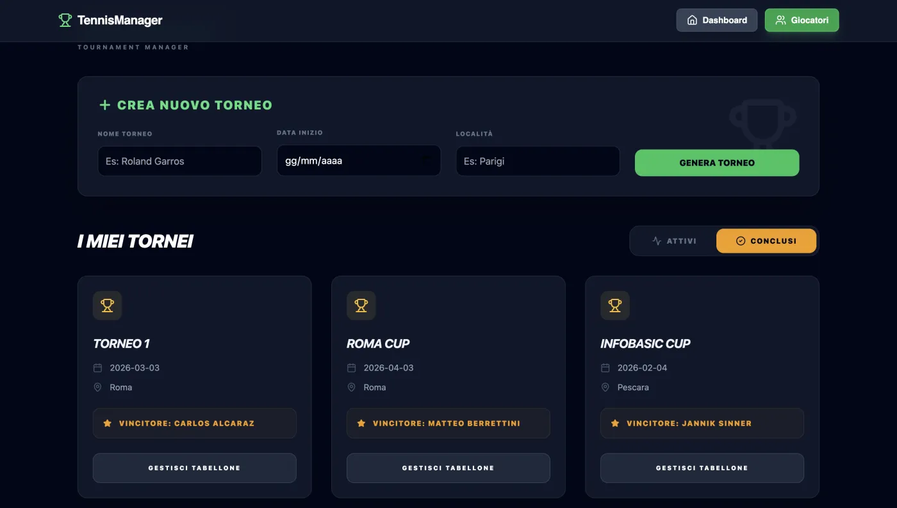
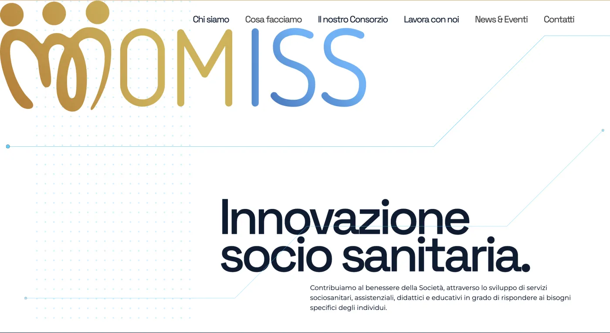
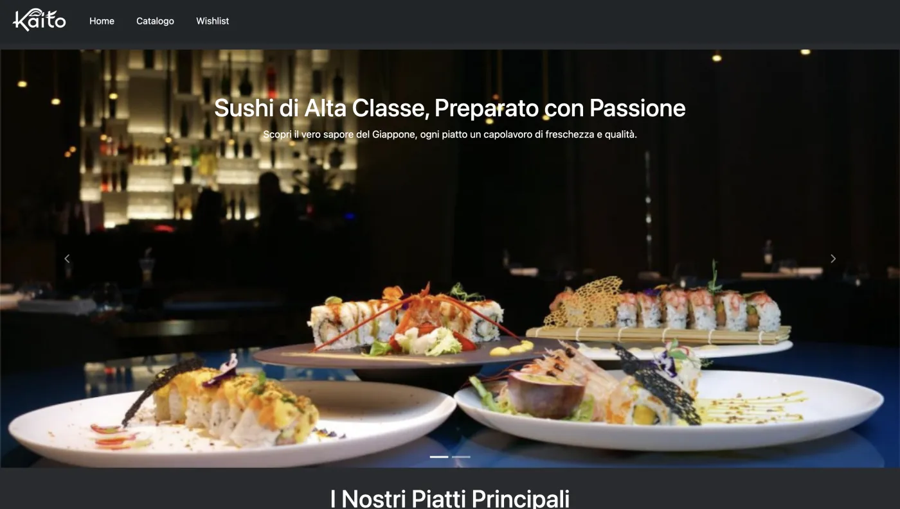
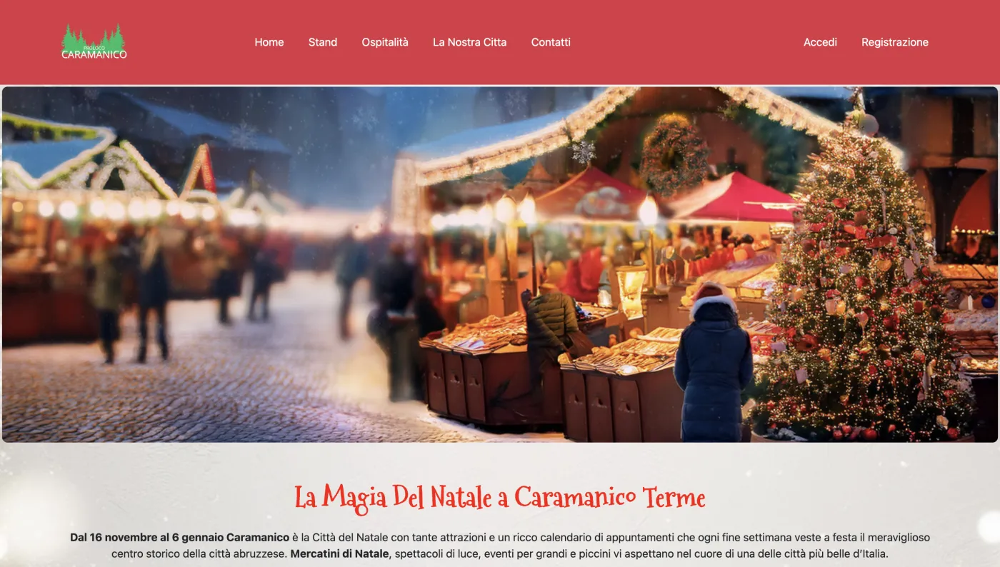
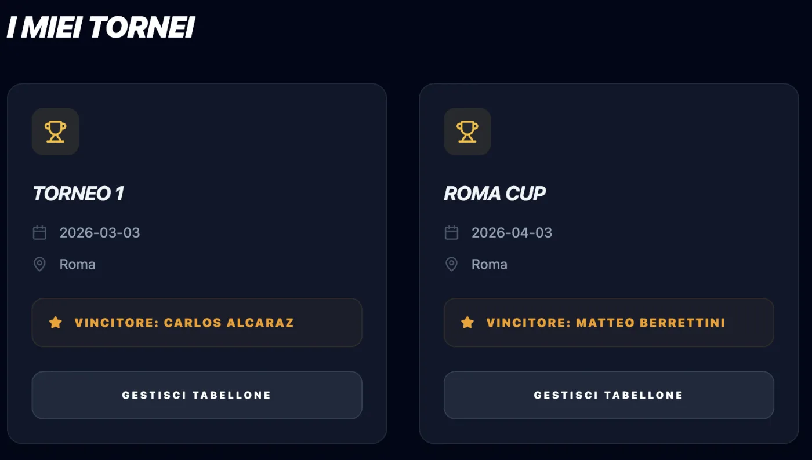

Disponibile per nuovi progetti
Web designer e sviluppatore full stack
Disegno le interfacce in Figma e le porto online con React, Next.js o WordPress, e un backend in Node.js e PostgreSQL. Qui trovi quattro progetti.

Tre siti per tre clienti
-
Consorzio Momiss, in WordPress
Il sito istituzionale di un consorzio che lavora nei servizi sociali, riabilitativi e di assistenza domiciliare.
Apri consorziomomiss.it
-
Ristorante di sushi, in JavaScript
Il menu di un ristorante di sushi con la lista dei piatti preferiti, disegnato in Figma e scritto in JavaScript.
Apri il sito del sushi
-
Mercatino di Natale, in Figma
Il sito della Pro Loco per il turismo natalizio del paese e i suoi mercatini, scritto in JavaScript.

TennisManager, il tabellone che avanza da solo
Un'app in React per creare tornei di tennis. Il cuore è l'algoritmo che genera il tabellone e porta avanti i vincitori turno dopo turno, fino alla finale.

Cosa faccio. Dal disegno al sito online.
- Interfacce in Figma
Schermate e prototipi prima del codice.
- Siti in WordPress
Siti istituzionali che il cliente aggiorna da solo.
- Applicazioni web
React e Next.js, con Node.js e PostgreSQL.
- Messa online
GitHub e Vercel, curando SEO e velocità.